All Images
1.0 Introducing the Shell
Figure 1
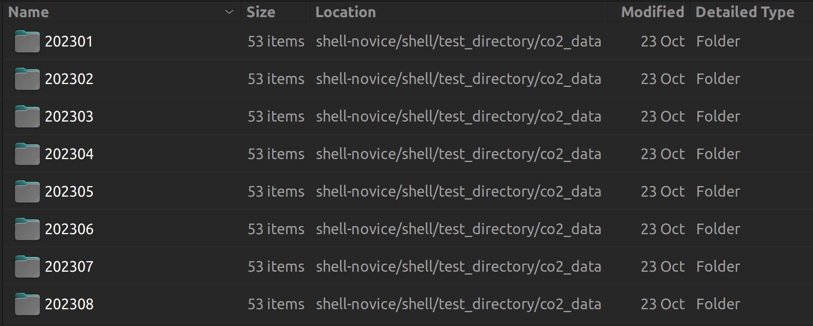
Test Directory structure
Figure 2

Example CSV structure
1.1 Files and Directories
Figure 1

The File System
Figure 2

Home Directories
Figure 3

Shell Command Syntax
Figure 4

File System for Challenge Questions
1.2 Creating Things
Figure 1

Nano in action
1.3 Wildcards, Pipes and Filters
Figure 1

Redirects and Pipes
1.4 Finding Things
Figure 1

File Tree for Find Example
1.5 Shell Scripts
Figure 1

Nano Display of the script
Figure 2
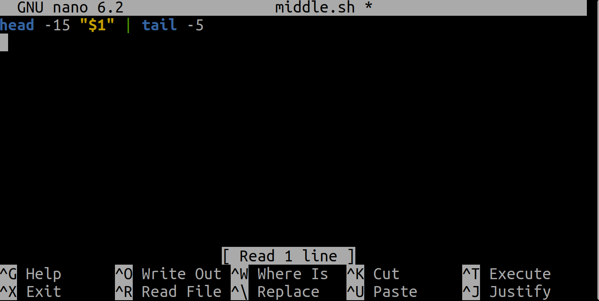
Nano Display of the script2
Figure 3
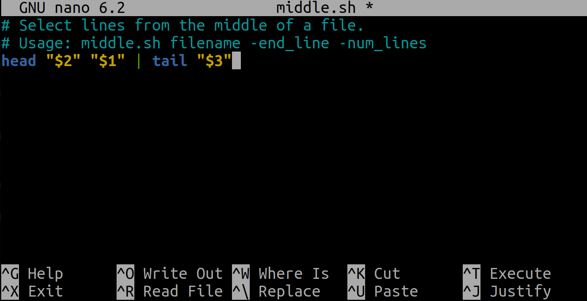
Adding comments in the script
Figure 4

Adding comments in the script2
1.6 Loops
2.0 What is Version Control?
Figure 1

Figure 2

Figure 3
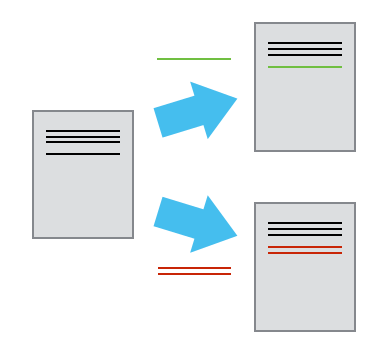
Figure 4

Figure 5

Figure 6

Figure 7

Figure 8
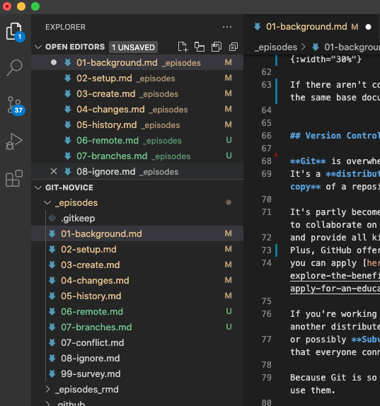
Figure 9
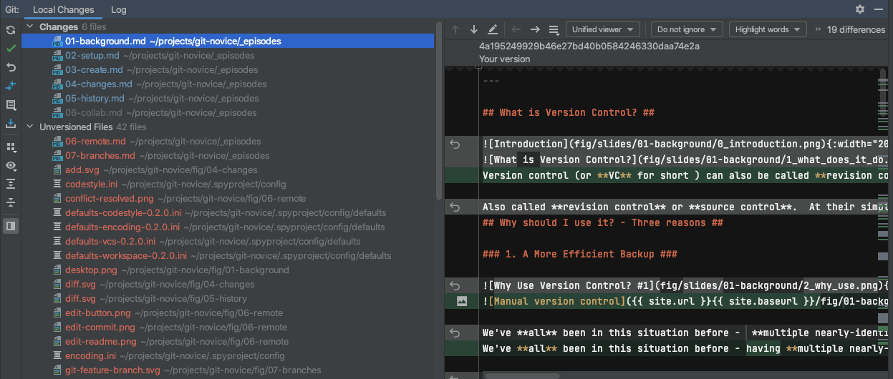
Figure 10

2.1 Setting Up Git
Figure 1
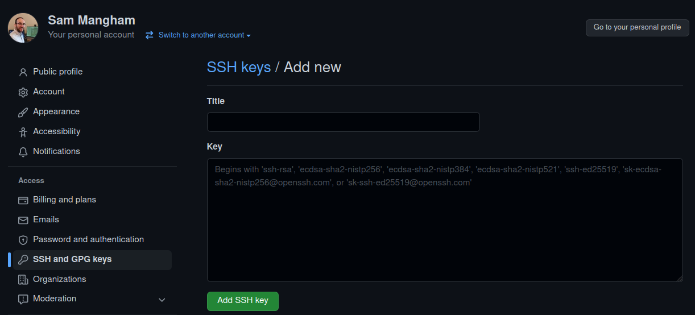
2.2 Creating a RepositoryExploring a Repository
Figure 1
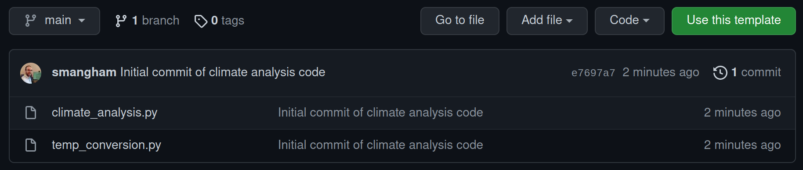
Figure 2
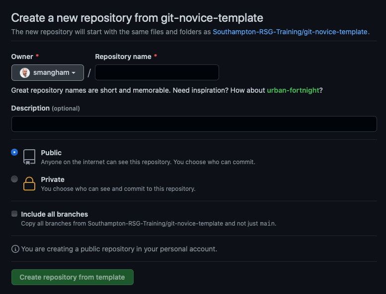
2.3 Tracking Changes
Figure 1

2.4 Exploring History
Figure 1

Figure 2
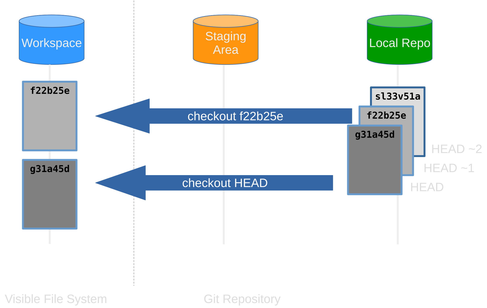
2.5 Remote Repositories
Figure 1
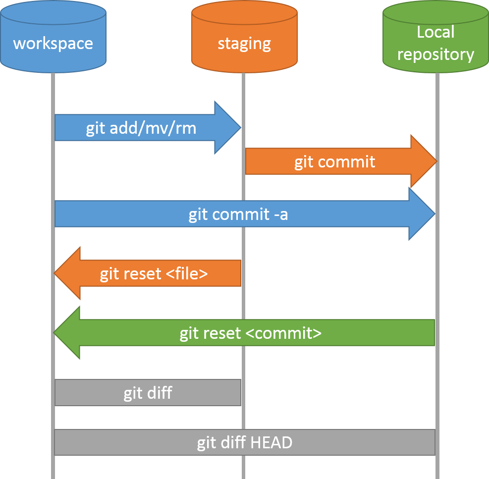
Figure 2

Figure 3

Figure 4

Figure 5
 Credit: Mitch
Altman, CC BY-SA 2.0
Credit: Mitch
Altman, CC BY-SA 2.0
Figure 6
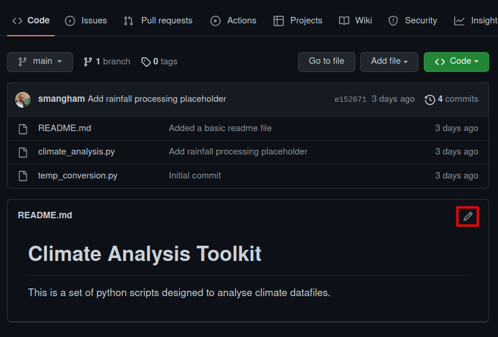
Figure 7
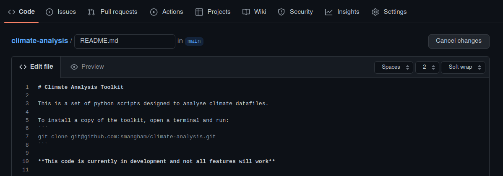
Figure 8
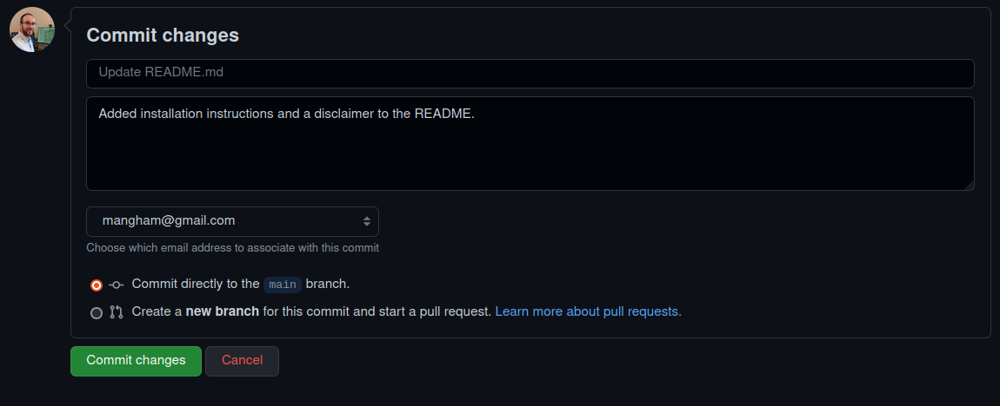
Figure 9

Figure 10
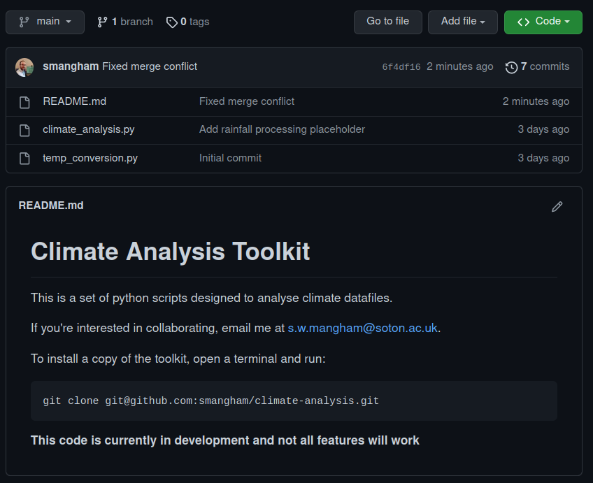
Figure 11

2.6 Branching
Figure 1

Figure 2
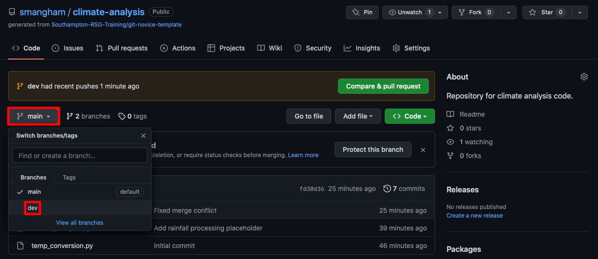
Figure 3

Figure 4

Figure 5
Figure 6

2.7 Ignoring Things
3.0 Python Basics
Figure 1
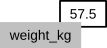
Variables as Sticky Notes
Figure 2
Creating Another Variable
Figure 3
Updating a Variable
3.1 Arrays, Lists etc
3.2 Repeating actions using loops
3.3 Processing data files
3.4 Making choices
Figure 1
Executing a Conditional
3.5 Modularising your code using functions
3.6 Handling Errors
3.7 Command Line Programs
3.8 Reading and analysing Patient data using libraries
Figure 1

Operations Across Axes
3.9 Data Visualisation
Figure 1
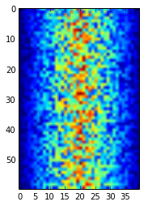
Heatmap of the Data
Figure 2
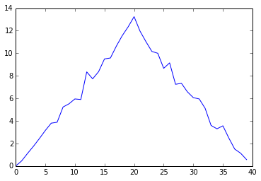
Average Inflammation Over Time
Figure 3
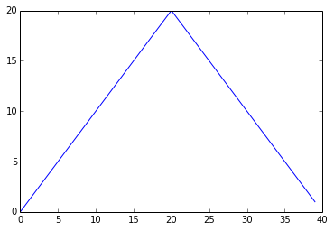
Maximum Value Along The First Axis
Figure 4
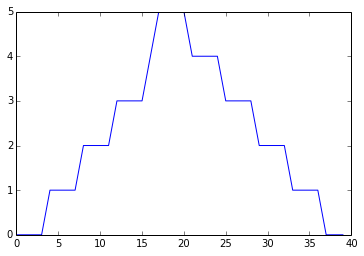
Minimum Value Along The First Axis
Figure 5

The Previous Plots as Subplots
Figure 6

Analysis of inflammation-01.csv
Figure 7

Analysis of inflammation-02.csv
Figure 8
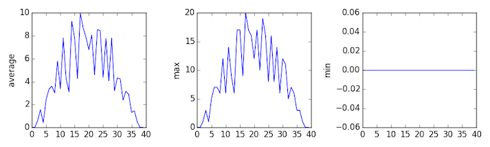
Analysis of inflammation-03.csv